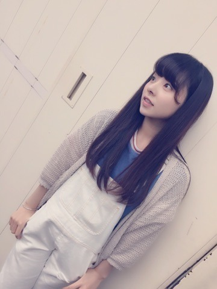
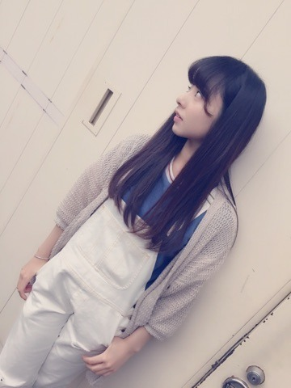
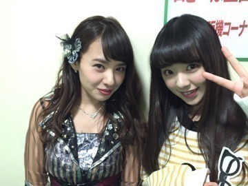
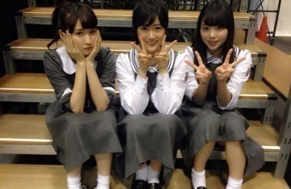

| 2015/05 14 Thu | こんにちわ＠ 'ェ' ＠♡ まに。まひろ。 |
こんばんわ♡
今日も１日おつかれさまです＠ 'ェ' ＠
まにだよ． ろってぃーだよん.

あみが撮ってくれました.＊

この私服は，台湾で着てた私服と同じ♡．
ちなみに偶然全く同じ白のサロペットをあみも持っててお揃いなんです＠ 'ェ' ＠
台湾にいる時，ずっと「のぎ天カメラ」が入っていたので，是非のぎ天checkよろしくお願いします．♡
山田菜々さんと．

少し前，お仕事終わりに菜々さんとお話しさせてもらいました.
何だろう？ 同じ関西弁だからかなぁ？
とっても話やすくて楽しかったです♡
一緒にいたスタッフさんに
「菜々とろってぃーは似てるんだよなー！」って言って頂けて嬉しかったです(#^.^#)にひ．
『乃木坂カフェ』,,,
えいっ♡

原宿にある『乃木坂カフェ』皆さんは行きましたか～♡？
もう終わっちゃいましたね（ ; ; ）
はやいよ～（ ; ; ）♡
そしてそして,『名古屋全国握手会』
えい♡

さゆ，ちま，まにレーンでしたぁ.＊
来てくれた皆♡ ありがとう。
是非又，会いに来てほしいな♡？
待ってます...。
そして最後に、、、
先日12thの選抜発表がありました。
私は選抜メンバーではありませんが 前回，前々回に引き続き、「乃木坂のLIVE選抜‼︎」として
乃木坂46をもっともっと引っ張っていける様，ろってぃー頑張りまぁぁーーーす♡‼︎
乃木坂46をもっともっと引っ張っていける様，ろってぃー頑張りまぁぁーーーす♡‼︎
もう「アンダー.」なんかとは言わせないぞぉ＠ 'ェ' ＠♡？へへへ
私も色々と思うことはありますが，
何だろう。すっごく前向きです♡
最近 毎日が楽しくて.＊
沢山の人を笑顔にしなきゃね.(#^.^#)
ポジティブ ポジティブ‼︎
皆 一緒にがんばろっ♡？
皆さんからの応援は十分すぎる位もらってますが，12thもまた，応援よろしくお願い致します♡
いつも本当にありがとう。
コメント(413)
2015/05/14 00:30